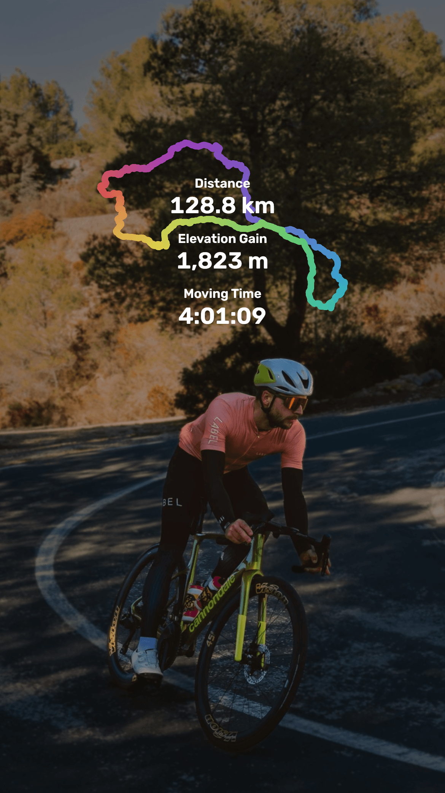
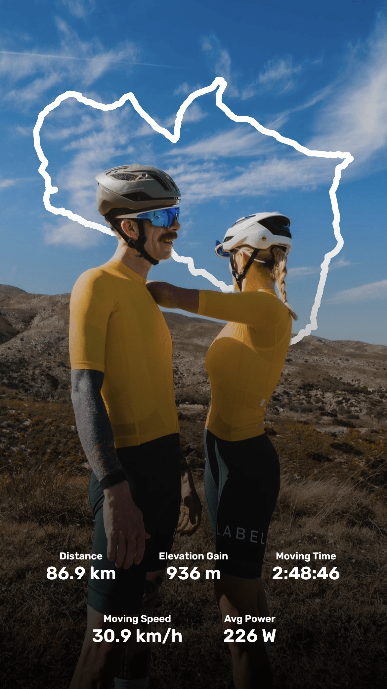
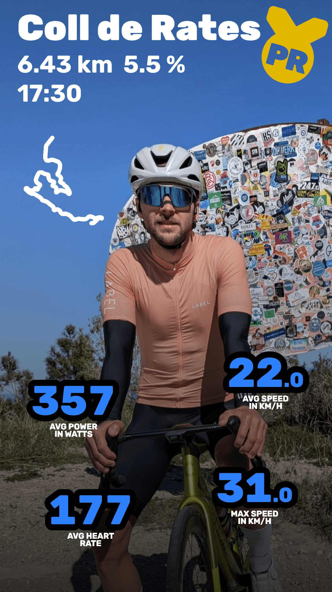
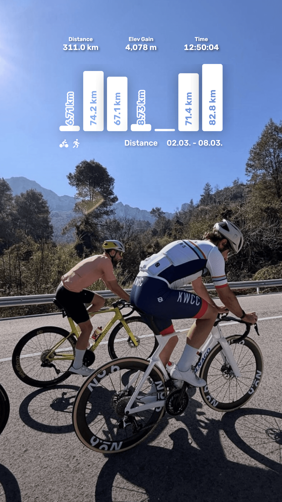

Turn your best Strava moments into stunning visual stories




-
✨Turn Strava activities and segment efforts into highlight photos and videos with overlays designed to match your shots
-
📊Show the stats that actually matter and place them where they fit best
-
🎨Dial in your own style with templates and build in effects, all in one app to craft your unique look
-
📆Celebrate a hard training week with a weekly recap overlay
Free
- ✨️️ Templates for all activity types
- 📆 Weekly summary overlays
- 🎨️ Photo effects
- 📊 All data fields
Pro
- 🎬 Animated overlays
- 🪄 Stats behind subjects
- 🌌 Background effects
- 👑 Segment overlays
- ✂️ Activity cropping
- 💎 Exclusive templates